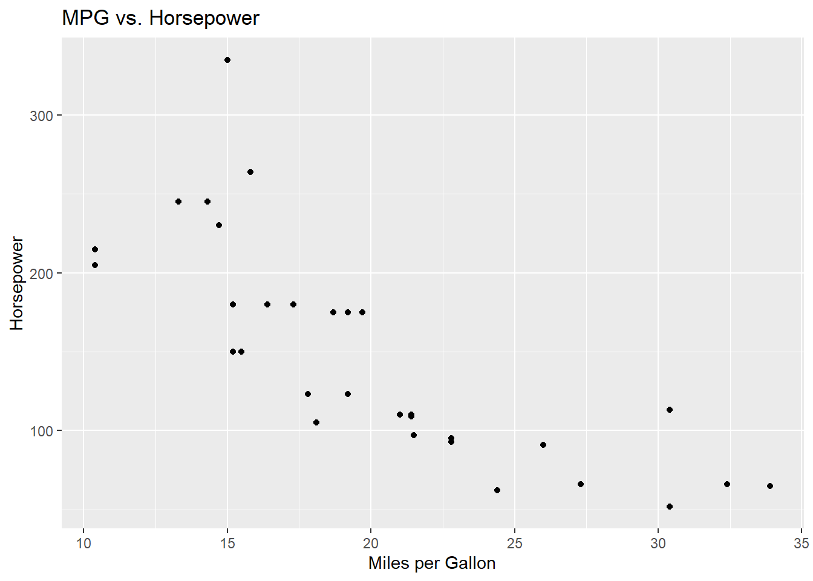
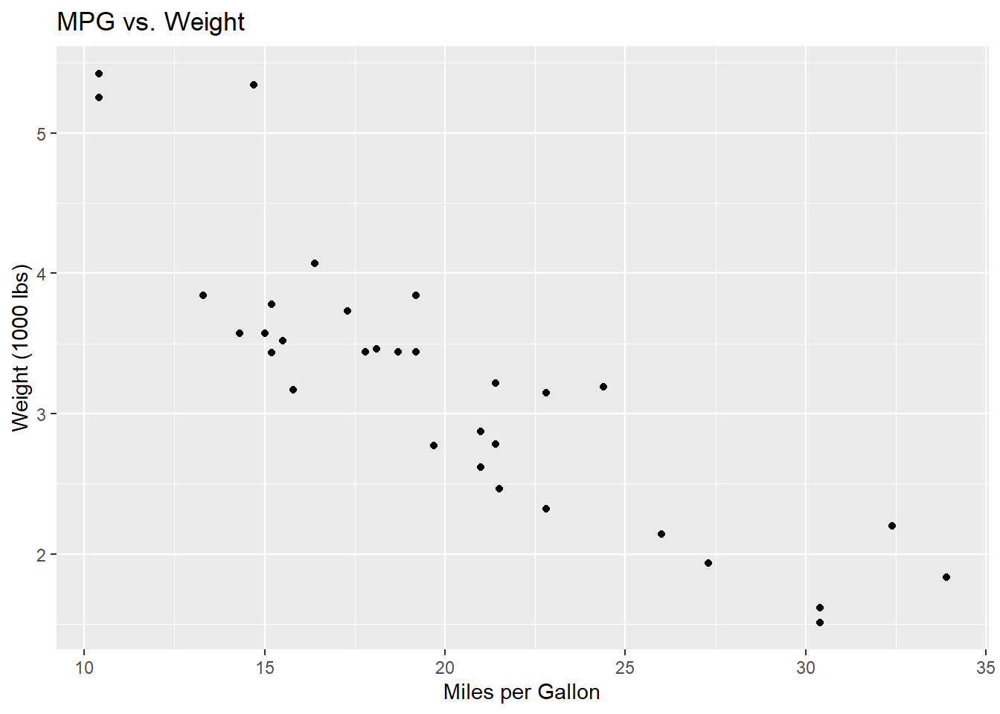
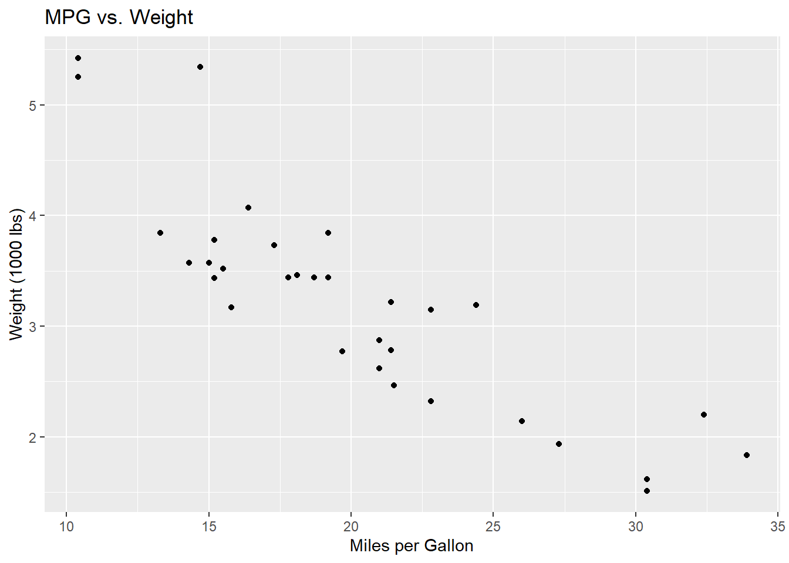
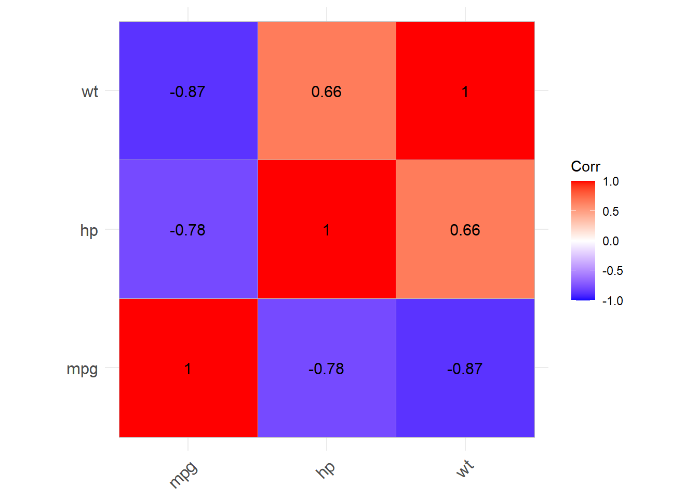
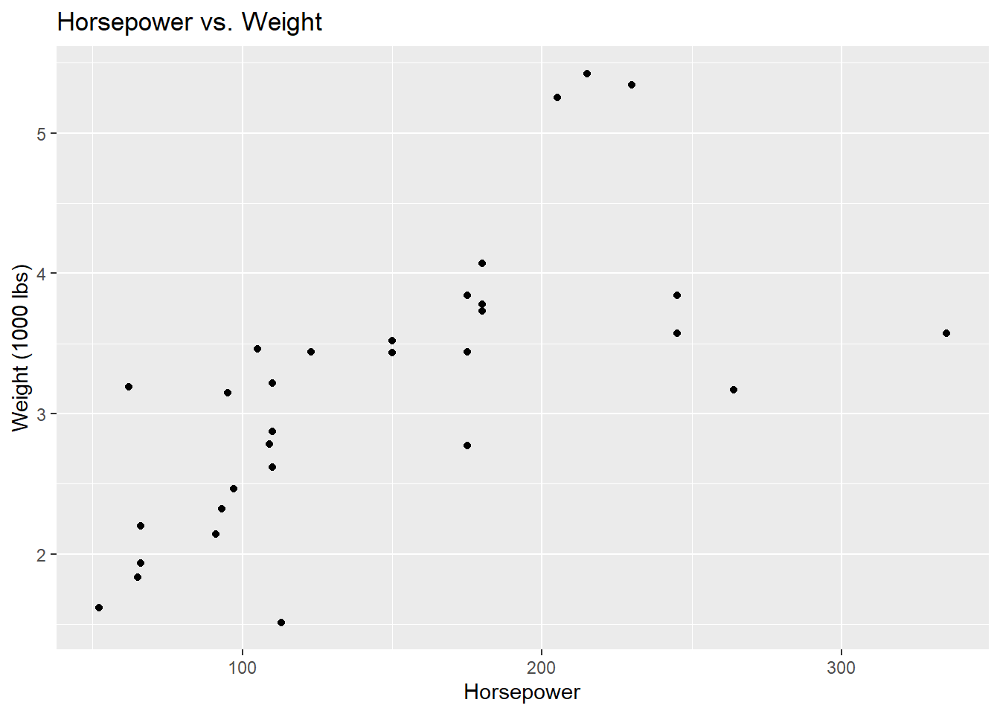
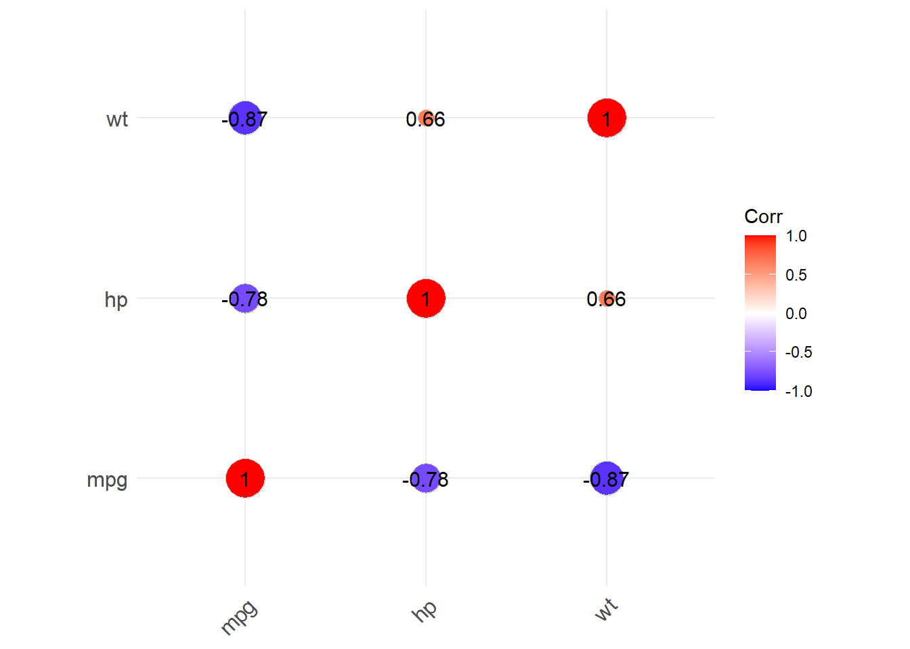
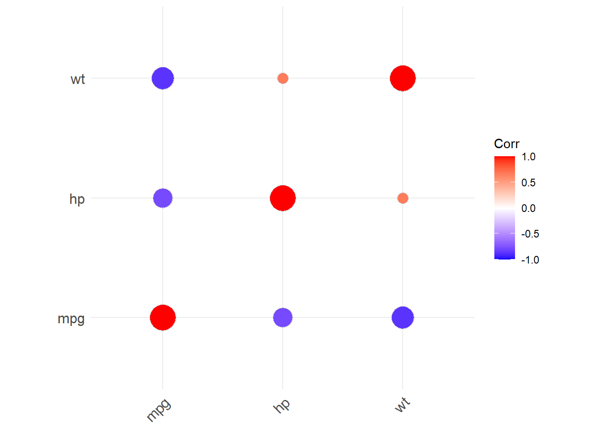
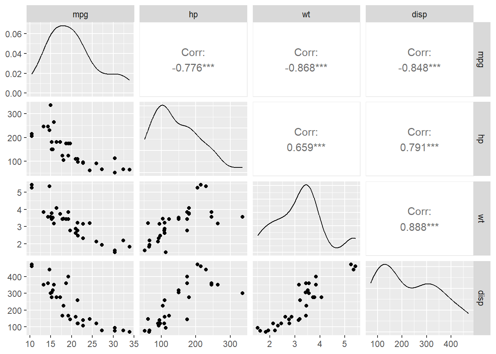

library(tidyverse)
library(ggcorrplot)
library(ppcor)
library(GGally)Lab 7
Due Friday, April 10 11:59pm
Set up
Open your RStudio project by going to File > Open Project. Select your BIOS 600 folder. (If you see a blue cube with your project name at the top right of your RStudio window, you’re good to go - you are already in your project folder.)
To begin, start a new Quarto file. Change the title to Lab 7. Keep the output as html.
“Save As” into your class project folder with a new name: “
lab-07.qmd”.Update your name and date in the YAML.
Render your document to make sure your YAML is rendering correctly.
Loading libraries
Below you’ll find the packages needed for today’s lab. You may need to use install.packages first.
Introduction
In this tutorial, we will explore relationships between variables in the mtcars dataset using correlation analysis. You will learn how to compute Pearson’s and Spearman’s correlation coefficients, visualize data using scatter plots and correlation plots, and explore confounding effects using partial correlation. We will also use the ggcorrplot package to visualize the correlation matrix.
The data
The mtcars dataset contains data about fuel consumption and vehicle design for 32 different car models. A few variables from this dataset include:
mpg: Miles per gallon (fuel efficiency)hp: Horsepowerwt: Weight of the car (in 1,000 lbs)disp: Displacement (engine size)
We will use these variables to explore relationships and correlations in the dataset.
Pearson’s correlation
First, we will compute the Pearson’s correlation coefficient between mpg (miles per gallon) and hp (horsepower). Pearson’s correlation measures the strength and direction of the linear relationship between two continuous variables.
data(mtcars) # attach mtcars dataset
cor(mtcars$mpg, mtcars$hp)[1] -0.7761684Let’s plot these two variables to see if this correlation makes sense:
mtcars |>
ggplot(aes(x = mpg, y = hp)) +
geom_point()+
labs(x = "Miles per Gallon",
y = "Horsepower",
title = "MPG vs. Horsepower")
The Pearson’s correlation between mpg and hp is approximately -0.776. This negative correlation suggests that as horsepower increases, miles per gallon tends to decrease, which is also apparent in the scatterplot. The strength of the linear relationship is strong because the correlation is close to -1.
Correlation matrix
Now, we can create a scatter plot between mpg and wt to visually inspect the relationship. Then, we’ll calculate the correlation matrix for mpg, hp, and wt to see how these variables relate to one another.
# Scatter plot between mpg and wt
mtcars |>
ggplot(aes(x = mpg, y = wt)) +
geom_point() +
labs(x = "Miles per Gallon",
y = "Weight (1000 lbs)",
title = "MPG vs. Weight")
Both approaches produce the same plot. The difference is just where we tell R to find the data. Using the pipe (|>), we pass mtcars into ggplot() from the left. Using the data = argument, we put it directly inside ggplot(). Either style works — use whichever feels more readable to you.
ggplot(mtcars, aes(x = mpg, y = wt)) +
geom_point() +
labs(x = "Miles per Gallon",
y = "Weight (1000 lbs)",
title = "MPG vs. Weight")
The scatterplot suggests a negative relationship between mpg and wt: as the weight of a car increases, fuel efficiency tends to decrease.
# Pearson correlation between mpg and wt
cor(mtcars$mpg, mtcars$wt)[1] -0.8676594For correlation, order doesn’t matter:
cor(mtcars$wt, mtcars$mpg)[1] -0.8676594Lastly, we’ll visualize the correlation matrix using the ggcorrplot package.
# Correlation matrix for mpg, hp, wt
corr_matrix <- cor(mtcars[, c("mpg", "hp", "wt")])
# corr_matrix <- round(cor(mtcars[, c("mpg", "hp", "wt")]), 1)
corr_matrix mpg hp wt
mpg 1.0000000 -0.7761684 -0.8676594
hp -0.7761684 1.0000000 0.6587479
wt -0.8676594 0.6587479 1.0000000The correlation matrix shows a strong negative correlation between mpg and both hp (-0.776) and wt (-0.868). These negative values indicate inverse relationships. The correlation between hp and wt is moderately positive (0.659).
# Correlation plot using ggcorrplot
ggcorrplot(corr_matrix, lab = TRUE)Warning: `aes_string()` was deprecated in ggplot2 3.0.0.
ℹ Please use tidy evaluation idioms with `aes()`.
ℹ See also `vignette("ggplot2-in-packages")` for more information.
ℹ The deprecated feature was likely used in the ggcorrplot package.
Please report the issue at <https://github.com/kassambara/ggcorrplot/issues>.
Let’s look visually at that relationship between hp and wt
# Scatter plot between mpg and wt
mtcars |>
ggplot(aes(x = hp, y = wt)) +
geom_point() +
labs(x = "Horsepower",
y = "Weight (1000 lbs)",
title = "Horsepower vs. Weight")
The ggcorrplot package offers lots of versatility in terms of visualizing correlation matrices. See documentation here for several options.
For example:
ggcorrplot(corr_matrix, lab = "TRUE",
method = "circle")
Hmm, this would probably look better without the numbers printed. Let’s try again:
ggcorrplot(corr_matrix, lab = "FALSE",
method = "circle")
The correlation plot visually reinforces the relationships: darker colors and larger numbers indicate stronger correlations, whether positive or negative.
Exploring confounding
Now, we will investigate whether wt (weight) could be a confounding variable influencing the relationship between mpg and hp. By using partial correlation, we can control for the effect of weight and see whether the relationship between mpg and hp changes.
pcor.test(mtcars$mpg, mtcars$hp, mtcars$wt) estimate p.value statistic n gp Method
1 -0.5469926 0.001451229 -3.518712 32 1 pearsonThe partial correlation between mpg and hp, controlling for wt, is approximately -0.546. This value is lower than the original Pearson’s correlation (-0.776), indicating that part of the relationship between mpg and hp is influenced by the car’s weight. The p-value (0.00145) suggests that this partial correlation is statistically significant. In other words, even after controlling for wt, there is still a significant partial correlation between mpg and hp.
Spearman’s correlation
Spearman’s correlation is a rank-based measure and is useful when the relationship between two variables might not be linear (only capturing certain types of non-linear associations), or when there may be outliers present in the data.
Spearman’s correlation is different from Pearson’s correlation in that it doesn’t assume a linear relationship. Instead, it measures how well the relationship between two variables can be described using a monotonic function. In a monotonic relationship, as one variable increases (or decreases), the other variable either always increases or always decreases, though not necessarily at a constant rate.
Here, We’ll compute the Spearman’s correlation between mpg and hp.
cor(mtcars$mpg, mtcars$hp, method="spearman")[1] -0.8946646The Spearman’s correlation between mpg and hp is approximately -0.895, which is stronger than the Pearson’s correlation. This suggests a strong negative relationship between mpg and hp, even when considering the ranks of the data, indicating a monotonic relationship.
Identifying non-linear relationships
Finally, we can create a matrix of scatterplots using the ggpairs() function to visualize relationships between multiple variables at once. This will help us identify potential non-linear relationships that could impact our choice of correlation methods.
Note: This function is available in the GGally package, which you may need to install first.
ggpairs(mtcars[, c("mpg", "hp", "wt", "disp")], main = "Scatterplot Matrix")
The scatterplot matrix shows the relationships between all pairs of variables. Most of the relationships between mpg and other variables appear to be linear, especially between mpg and wt. However, there may be non-linear relationships between some variables, like disp (displacement) and wt, which could be explored further.
Note that we can also create the same plot using the select() function:
mtcars |>
dplyr::select(mpg, hp, wt, disp) |>
ggpairs()On your own!
Dataset
The iris dataset contains measurements of 150 flowers from three species of iris. The variables include:
Sepal.Length: Length of the sepal (cm)Sepal.Width: Width of the sepal (cm)Petal.Length: Length of the petal (cm)Petal.Width: Width of the petal (cm)Species: Species of iris (setosa, versicolor, virginica)
You will use these variables to explore correlations and relationships in the dataset.
Exercise 1
Compute the Pearson’s correlation coefficient between Sepal.Length and Petal.Length to measure the linear relationship between these two variables. What is the Pearson’s correlation coefficient between these two variables? Does this make sense within the context? (1-2 sentences).
Exercise 2
Calculate the Pearson’s correlation coefficient between Sepal.Length and Sepal.Width to explore their linear relationship. Then, visualize this relationship using a scatter plot. Comment on what you see.
Exercise 3
Compute a correlation matrix for the four variables:Sepal.Length, Sepal.Width, Petal.Length, and Petal.Width - and visualize it using the ggcorrplot package. Comment on the relationships you see. Note that since these are the first four variables in the iris dataset, we can subset the dataset to only these variables using iris[,1:4].
Exercise 4
Use ggpairs to create a visualization of the four variables in the iris dataset (the same variables from Exercise 3). To do this, start with the iris dataset, then use the select function to select the variables of interest, then pipe to ggpairs(). (No interpretation necessary, just the plot.)
TipGetting an error?
If you’re getting an error, try replacing select() with dplyr::select(). Sometimes different packages have functions with the same name, so when you use the functions, R isn’t sure which package to use. By specifying dplyr::select, you are telling R to use the select function specifically within the dplyr package, which is a part of the tidyverse.
Exercise 5
Compute the partial correlation between Sepal.Length and Petal.Length, controlling for Sepal.Width. What do you conclude? (1-2 sentences)
Exercise 6
Run the following code for a fun visualization in the iris dataset using faceting. Change the theme to something other than theme_minimal(). (See other possible themes here.)
Comment on any relationships you see. What do you think the facet_wrap(~Species) command does?
ggplot(iris,
aes(x = Sepal.Length, y = Sepal.Width, color = Species)) +
geom_point(size = 3, alpha = 0.6) +
geom_smooth(method = "lm", se = FALSE) +
labs(title = "Sepal Dimensions by Species",
x = "Sepal Length",
y = "Sepal Width") +
theme_minimal() +
facet_wrap(~ Species) +
theme(legend.position = "none")AI Attestation
Was AI used on this assignment? If so, describe your prompts below. If not, simply state “AI was not used on this assignment.”
Submission
As you’ve seen previously, we can Render the template into an .html file that can be opened by any web browser. To export it as a .pdf, open the file in your web browser and then print to or save as a .pdf document. Your TAs will show you how if you need help! (There is a way to directly knit to a .pdf file, but it’s quite a bit more involved.)
You will submit the PDF documents for labs and homework to Gradescope as part of your final submission.
To submit your assignment:
Access Gradescope through the menu on the BIOS 600 Canvas site.
Click on the assignment, and you’ll be prompted to submit it.
Mark the pages associated with each exercise. All of the pages of your lab should be associated with at least one question (i.e., should be “checked”).
Select the first page of your .PDF submission to be associated with the “Formatting” section.
Grading
| Component | Points |
|---|---|
| Ex 1 | 2 |
| Ex 2 | 3 |
| Ex 3 | 3 |
| Ex 4 | 3 |
| Ex 5 | 2 |
| Ex 6 | 2 |
| AI Attestation | 1 |
| Formatting | 3 |
The “Formatting” grade is to assess the document format. This includes having a neatly organized document (no excessive output, warnings/messages when loading packages and/or data) with readable code and your name and the date updated in the YAML.